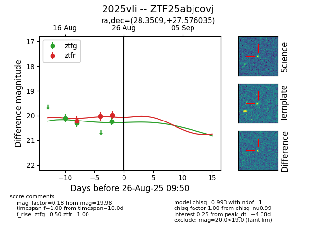

Target 2025vli at 2025-08-26 10:53, see:
FINK: fink-portal.org/ZTF25abjcovj
Lasair: lasair-ztf.lsst.ac.uk/objects/ZTF25abjcovj
ALeRCE: alerce.online/object/ZTF25abjcovj
TNS: wis-tns.org/object/2025vli
YSE: ziggy.ucolick.org/yse/transient_detail/2025vli
alt names
ZTF25abjcovj (ztf,fink)
2025vli (tns,yse)
coordinates:
equatorial (ra, dec) = (28.3509,+27.57604)
galactic (l, b) = (139.3884,-33.30781)
photometry
last atlaso=20.02, ztfg=20.24, ztfr=19.98
2 atlaso, 3 ztfg, 3 ztfr detections
